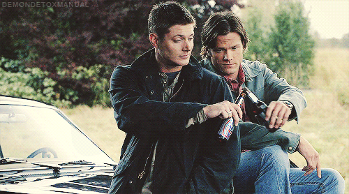

In this day and age, it's normal to find your people online. We're accustomed to relying on the support and generosity of folks who previous generations may have called strangers. On Twitter, we might find solidarity in a hashtag — #blacklivesmatter, #yesallwomen, #loveislove. We exchange inspiration and support in Facebook groups. Subreddits, slack channels, you name it.
This is an oral and data-driven account of how, in 2005, one of these communities came to the rescue for one person, when the people around them IRL failed.
This story is best experienced with headphones .
Scroll for more
Our story starts in 2005, when the WB channel created one of the longest-running American fantasy TV shows. One which you probably haven’t heard of.
‘Supernatural’ is a science fiction show about brothers Dean and Sam Winchester. They live in a black 1967 Chevy, drive across the country, and find and destroy demons. At the end of the day, they have a beer and they drive on to their next destination.

Somehow, Supernatural has one of one of the largest fan fiction communities on the internet. It’s bigger than Harry Potter, The Avengers or Sherlock. Fan fiction is, of course, what happens when fans write fresh storylines set in an existing fictional universe.
Fan fiction works, by fandom
Note: Data compiled by Destination Toast from Archive of Our Own, Fanfiction.net, Wattpad and Tumblr. RPF stands for Real Person Fiction. Abbreviations are explained here: OUAT (Once Upon a Time), BtVS (Buffy the Vampire Slayer), LOTR (Lord of the Rings), ASOIAF (A Song of Ice and Fire), SPN RPF (Supernatural RPF), RT/AH RPF (Rooster Teeth/Achievement Hunter/FunHaus RPF), MCR (My Chemical Romance).
Source: Destination Toast
Why is this show so popular among the fan-fiction community? It has to do with its strong emphasis on family. In particular, fan writers seem to be inspired by the complicated dynamics between Dean and Sam. For example, one fan found inspiration in the brothers’ emotional journey. The makers of the show know that, andt they play with it.
My friend Hans Bekhart noticed the subtextual homoerotic tension, and she ran with it.
In Bekhart’s 4,448-word story about Supernatural, Dean and Sam’s brotherly love turns incestuous, as you may have guessed. Dean resists Sam’s kiss at first... he tells Sam not to follow his sexual urges.
“Why not?,” asks Sam.
“Because it’s wrong,” Dean says.
“Says who?” Sam whispers back
“I can’t do that to you, Sammy,” Dean breathes, but he doesn’t move away.
This scene might seem silly, but incestuous sexual acts between Sam and Dean are hardly the full story. On the back on that premise, Hans created a complex emotional framework and gives the characters depth far beyond what’s shown on TV.
Hans Bekhart
“So for me it's a way to kind of explore identity, my own identity as a queer person and also grief, specifically is a theme that comes up a lot in my stories.”
Some say the fan-fiction movement started in the late 1960s, when fans extended the stories of Captain Kirk and Mr. Spock and passed them around in zines. But the medium didn’t really come into its own until the advent of the internet. One of the most popular fan fiction sites, FanFiction.Net, touted close to 3 million registered users in 2011, one study said.
Another interesting tidbit from the study? The userbase of that fanfiction site was 78% women.
The fan fiction universe, by gender
women (78%)
men (22%)
Notes: Each dot represents about 10,000 users. The analysis is based on FanFiction.Net users whose profiles were public and created in 2010. The research analyzed samples from users who disclosed the gender with which they identify.
Source: Fan Fiction Statistics / FFN Research
Hans Bekhart
“Growing up as a woman and not having your story told and being told you're less than others is in itself something that is a very powerful motivation for wanting to reclaim a certain narrative. [...] So it's a space that is curated for and by women. It's the stories we're interested in telling each other outside of what is considered the mainstream narrative.”
For Bekhart, this kind of community existed on Live Journal. Between 2005 and 2009, Bekhart posted around 667 journal entries and fan-fiction stories.
In those four years, she exchanged roughly 12,458 messages with her fans in the comment section. In one story alone — the one that established her in the community — there were 197 comments.
Growing a community
Size of circles correspond to number of comments on each post. The posts are in chronological order and run from left to right and top to bottom.
For her fans, it was a way to revel in their common love for Supernatural, to explore the show’s characters further, and to get to know the person who wrote them.
Here’s Morgan Dawn, one of Bekhart’s followers at the time.
Morgan Dawn
“One of the things about live journal that sort of attracted a lot of people was that you’d be reading their blog and there would be a story they would have written, and then the next post would be a personal post about their children, or their pets, or their health, or their job. For me, I actually grew to like it because it made me feel like I was actually connection with someone real rather than just another person who like Sam Winchester or Dean Winchester.”
Hans Bekhart
“I started writing more serious themes because I went through a very turbulent period in my early twenties. ”
Bekhart was living with her high-school boyfriend at the time.
Hans Bekhart
“So my boyfriend at the time who was my fiance for a bit isolated me from my friends because he was very threatened by my spending any time with anyone other than him. If I hung out with my high school friends, it was inevitably a fight afterwards. And to have to defend yourself over and over again "it's not like that" they do like me is exhausting. It just became easier not to fight. So I could go online and have friends there instead and it wasn't threatening because they’re not going to try and seduce me or whatever dumb thing he had in his head.”
Morgan Dawn
“I remember her talking about her boyfriend, i remember not feeling comfortable.He was an individual who was not in her best interest. in other words there was control, there was negativity, i remember he was making her feel small.”
The more Bekhart threw herself into her community, the more it grew. In one of her most active years, she had been posting roughly 17 times every month.
The more I think about how to say this, the worse it is. There's no good way to do it. I miscarried the baby. I had a miscarriage. Nothing. It's hard to even type. We were given an early ultrasound - something having to do with detecting Down's Syndrome, and there was no heartbeat. They estimate that it probably happened a week ago. Eight weeks. The most common time to miscarry.
Hans Bekhart
“So I found out I was pregnant. And I was overjoyed. I was 23, i had a part-time job at a cafe, I was very broke, but I'm also a very stubborn person who sees meaning in the different events that happen in your life and at the time it seemed like this was something that was meant to happen. And i decided to keep the baby with every part of me wanted that baby. I was so excited to be a mother and to feel the heartbeat and to feel all the physical things that happen inside you. When you're pregnant. i was in love with every moment of it. and then i had what they called a missed miscarriage. Where i woke up one morning and suddenly this little voice that i had inside me was quiet, just wasn't there anymore.”
She didn’t post for a month after the miscarriage. She was grieving. After years of being in an isolated relationship, she was left alone with the pain.
Hans Bekhart
“Nobody in my real life was sad about me losing the baby. No one. Nobody said I'm sorry for your loss. What people say instead is 'It's probably for the best.'”
Bekhart’s boyfriend stopped talking to her after the miscarriage. He drank all day, every day. He stayed out late after work. Instead of coming home, he did lots of drugs. Bekhart felt abandoned.
But her live journal community never left. They raised money for her when her boyfriend refused to pay for medical bills. And most importantly, they showed their support by sharing stories.
Hans Bekhart
“I didn't know anybody who had had a miscarriage. So what happened online was that people started emailing me that had read my fan fiction and had become friends to tell me that they had had 2 miscarriages, that they had had 5 miscarriages, it was something that still hurt them, it was something they healed from, it became something that I could experience with people who knew what it felt like. The first person that ever made me feel angry about what had happened to me was somebody I knew in fandom. After the breakup I had posted about it and there were dozens of people saying 'gosh, that's so sad. I'm so sorry for you.' and one person said 'Fuck that guy. That guy did wrong by you. These people are doing wrong by you.' I don't think she has any idea about how much that meant to me and how transformative it was. Because I didn't think I could be angry on my own behalf. I didn't think that I deserved it”
Bekhart’s story started in 2005. It was the year before Twitter was created and one year before Facebook allowed anyone from the public to sign on. Her story is one of the earliest iterations of what we see now: an arc in which someone finds support in an online community, engages with the community, and grows within it. Over time, they grow from being sidekicks to being protagonists and even heroes within their niche. They give to their community and the community, in turn, gives back.
Hans Bekhart
“The support and validation you can find in online circles from the stresses and stagnation from your real life to a validation that you are a storyteller and that the content and narrative you wanna tell is valid, i don't think that can be overstated.”
Notes: All the names used in this story are online handles. Special thanks to Stevie for their expertise and Mooj Zadie and Andrew Van Dam for editing. This story was originally conceived for Tape Fest, a live, unrecorded radio show.
Wanna see more?
Send me your details. Then I can send you an email when the next one publishes.